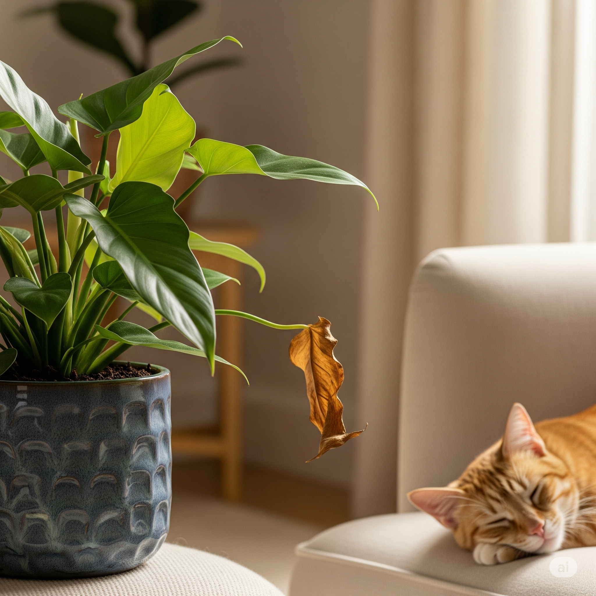

🪴 Queda de Folhas em Plantas: Sinais de Saúde ou Alerta?

Ver uma folha cair pode, à primeira vista, soar como um mau presságio para a sua planta, mas nem sempre é motivo para preocupação. Assim como nossos amigos felinos trocam a pelagem e nós renovamos nossa pele, as plantas também passam por ciclos naturais de vida que incluem a queda de suas folhas.
Quando a Queda é Natural?
É um processo totalmente esperado e faz parte da renovação saudável da sua planta quando a queda é esporádica e atinge folhas mais antigas, que já apresentavam coloração amarelada, seca ou estavam localizadas na base do caule. Nesses casos, a planta está simplesmente otimizando sua energia, direcionando-a para o crescimento de novas brotações e eliminando o que não é mais produtivo.
Pense nisso como uma forma de autolimpeza e eficiência energética da planta. É comum em muitas espécies, especialmente as que crescem em altura, como a costela-de-adão e o lírio-da-paz, que as folhas mais velhas na parte inferior amarelem e caiam.
Sinais de Alerta: Quando se Preocupar?
No entanto, a situação muda de figura e exige atenção quando a queda de folhas é intensa, repentina e, principalmente, se atinge folhas novas e aparentemente saudáveis. Diversos fatores podem estar por trás desse "pedido de socorro" da sua planta:
- Estresse Ambiental: Correntes de ar, temperatura instável, baixa umidade ou luz inadequada.
- Problemas com a Rega:
- Excesso: folhas moles, amareladas, manchadas.
- Falta: folhas secas, murchas e quebradiças.
- Mudanças de Local: Choque de aclimatação pode levar à perda temporária de folhas.
- Interação com Pets: Marcas ou mordidas? Gato curioso pode estar por perto.
- Deficiências Nutricionais: Falta de nitrogênio, magnésio ou outros nutrientes.
- Pragas e Doenças: Pulgões, cochonilhas, ácaros, fungos — fique atento a sinais visuais.
Guia Rápido de Observação:
- Folhas velhas, amarelas e na base? → Renovação natural.
- Folhas novas ou verdes caindo? → Alerta: verifique luz, rega, ambiente.
- Marcas ou mordidas? → Pet curioso. Avalie proteção.
- Queda após mudança? → Aclimatação. Dê tempo e estabilidade.
- Manchas, insetos ou teias? → Pragas ou doenças. Isolar e tratar.
- Folhas com coloração estranha? → Deficiência nutricional. Revise o solo.
O Que Fazer?
Observar o padrão da queda e o estado das folhas é essencial para diferenciar o natural do problemático. Comece ajustando a rega e a iluminação, e observe com paciência como a planta reage.
Com atenção, ela voltará a crescer firme — e segura para compartilhar o ambiente com seu gato! 🌱🐾
← Voltar para o blog